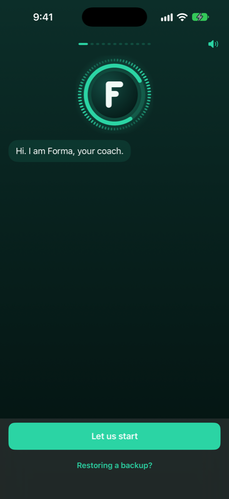
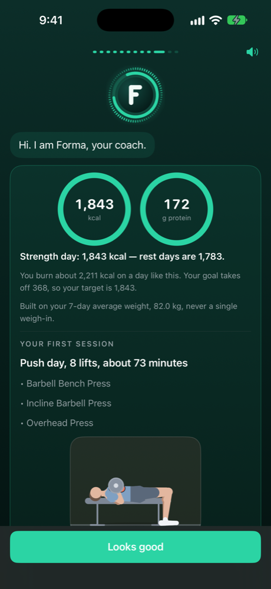
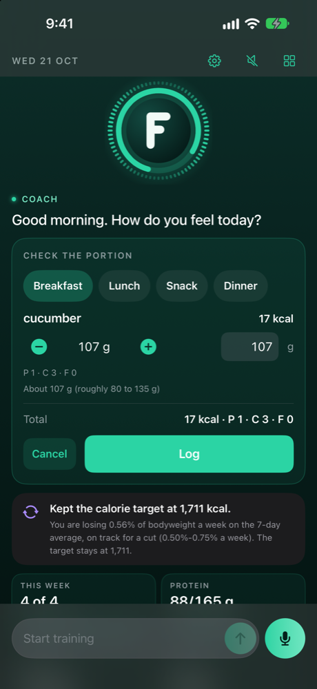
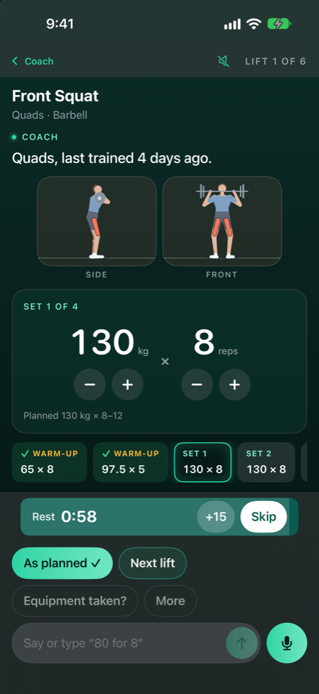
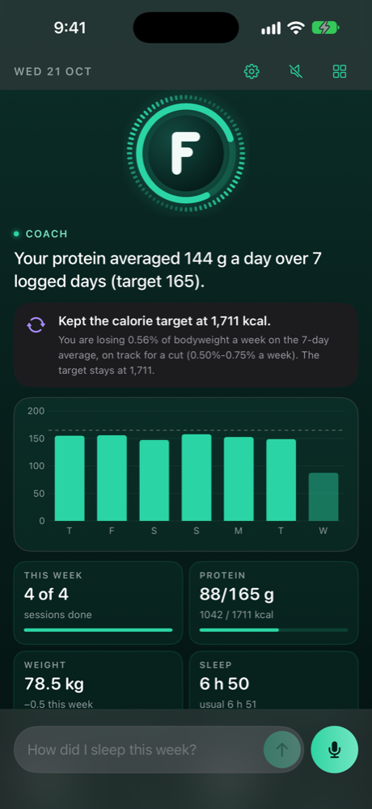
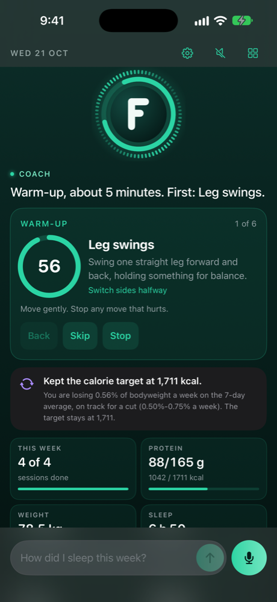
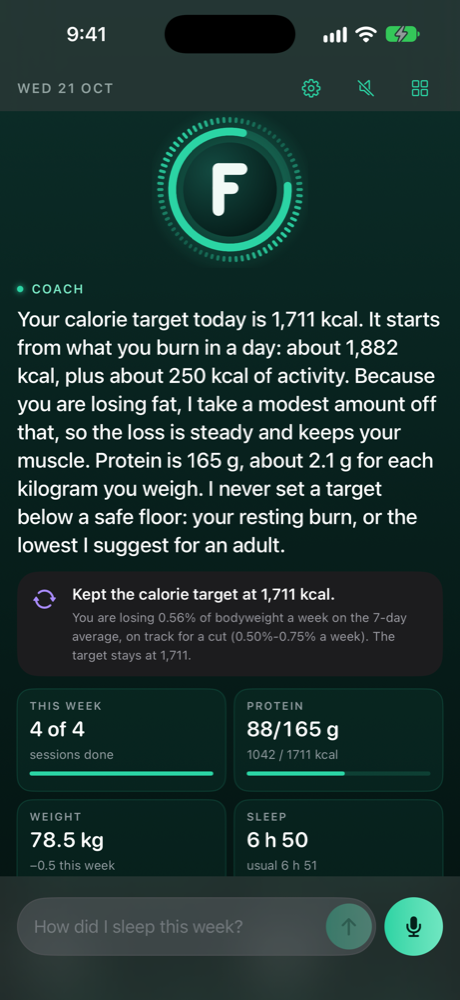

Forma 360
A coach you talk to. Train, eat and follow your progress through one conversation on your iPhone.
Coming to the App Store
Start with a tutorial Read the guide
For iPhone. Requires iOS 26.
See it







Screens show sample data.
One coach screen
Speak or type. Ask for what you need in plain words, without working through a row of screens first.
Everyday logging
- Log breakfast, an espresso, creatine or your weight
- Start training and say when you only have 35 minutes
- Ask for a warm-up, cool-down, desk reset or stretch
Answers from your records
- Ask about sleep, bench progress, records and training volume
- Check resting heart rate, body fat and your calorie target
- Ask whether you are on track, look for patterns or review your week
Train, Fuel and Reports open from the grid menu at the top right. Reports starts with a short coach summary and your on-track card. Full report opens the full Progress screen.
A first conversation, not a setup maze
The first run asks about your name, goal, height, weight, sex, birth date, training days and where you train. It ends by revealing your calorie and protein targets and your first session.
After that, keep talking to the same coach. Ask what can you do whenever you want a reminder.
A quiet start to the day
Check in as Wrecked, Flat, Normal, Good or Strong. Or say I feel 7. An optional morning nudge is there if you want it.
Six quiet numbers sit on your home screen: this week, protein, weight, sleep, HRV and resting heart rate. Tap one for its chart.
Core and Power
Forma Core
- Everything on your iPhone
- Speech recognised on the phone and never sent anywhere
- Coach memories stored on the phone only
- Optional, read-only Apple Health
- Backup to your own private iCloud
Forma Power
- Everything in Core
- Garmin data
- Opt-in online AI help for free-form questions and meal ideas
- Online AI help with meal photos and descriptions
Nothing derived from your watch is ever sent to an AI service.
Your data stays in your hands
The coach remembers only a few things you tell it, such as a food you avoid, being sick, travelling or a busy week. See and delete them in Settings, under Data & backup, then What the coach remembers.
Export or delete all your data in Settings. Read the full privacy policy for the legal detail.
Learn a little at a time
The tutorials cover the first conversation, your first week, morning check-ins, shorter sessions and reports. The full guide includes a complete cheat sheet of things to say.
What it is not
Forma gives information, not medical advice. Targets, trends and scores are estimates. Talk to a qualified health professional about medical decisions.
Questions? See support, or write to support@raveniq.ai.